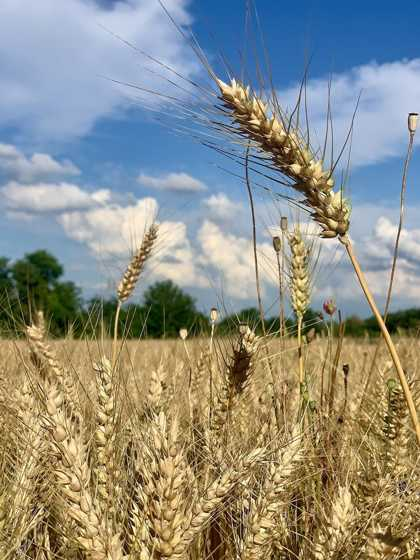
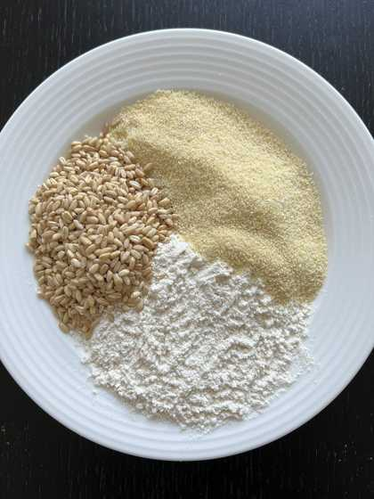
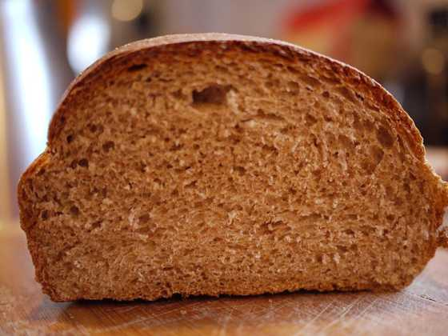
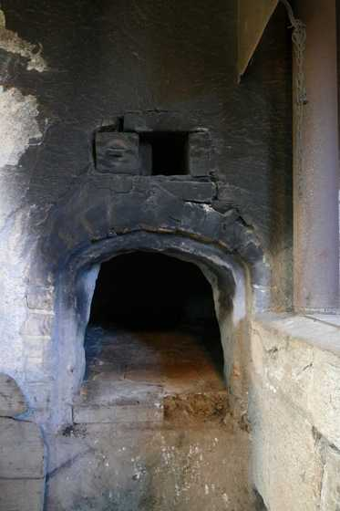
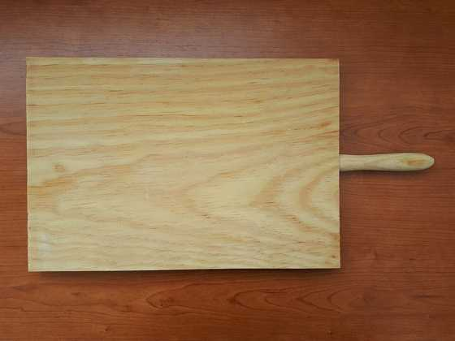
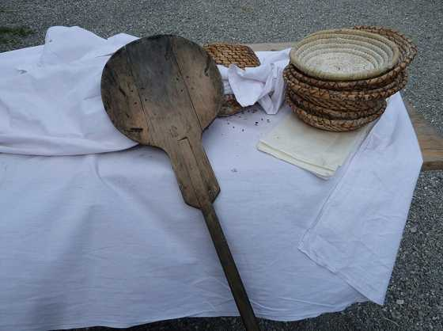

写真: Ripe wheat ears / Jazzmaster1997 / CC BY 4.0(撮影地: 英国)
写真: Ripe wheat ears / Jazzmaster1997 / CC BY 4.0(撮影地: 英国)ABOUT
店名に込められた想い
「麦人(むぎんちゅ)」の「麦」は小麦、「人」は人。その二つをつなげた店名で、「パンで人を繋ぐ」という想いが込められていると紹介されています。地域の人が笑顔でつながる、地元で愛されるパン屋を目指しています。
2026年3月28日(土)に玉名魚市場のとなりでオープン。ご夫婦で営まれていると紹介されています。魚市場内の駐車場が利用できます。
開店時の紹介記事をもとにしています。屋号の細かな想いなどは、店頭・Instagramでご確認ください。




BREAD
パンのこと
紹介記事では、次のパンが挙げられています。価格・その日のラインナップは準備中です。
とろ〜り濃厚クリームパン
那須御養卵と阿蘇産牛乳の自家製カスタードを、ふんわりした生地に。看板商品と紹介されています。
蔵出し明太フランス
1番人気の一つと紹介されています。
そのほか
抹茶のデニッシュ、あんぱん、塩パン、惣菜パンなど。価格: 準備中







写真はフリー素材のイメージで、店舗の実際の様子・商品ではありません。実際の写真はご提供のものに差し替えます。
VOICE
口コミ
イメージ例
ふわふわの生地に、クリームがたっぷり。朝のうちに買いに行きたくなります。
イメージ例
魚市場のとなりで駐車場に停めやすく、家族みんなで立ち寄れました。
イメージ例
あたたかい雰囲気のお店で、パンを選ぶ時間が楽しかったです。
※制作側が作成したイメージ例で、実在のお客様の声ではありません。
ACCESS
アクセス
| 住所 | 〒865-0065 熊本県玉名市築地216(玉名魚市場となり) |
|---|---|
| 電話 | 準備中 |
| 営業時間 | 準備中(開店時の記事では9:00〜17:00、売り切れ次第終了との紹介。変更の可能性があるため要確認) |
| 定休日 | 準備中(開店時の記事では木・日曜との紹介) |
| @muginchu_bakery |